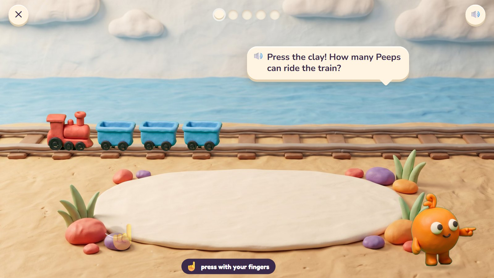
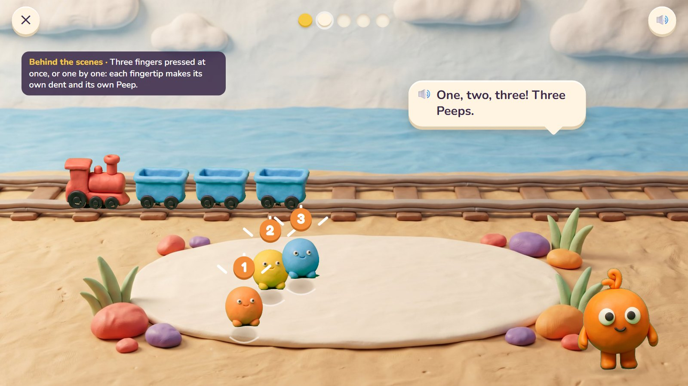
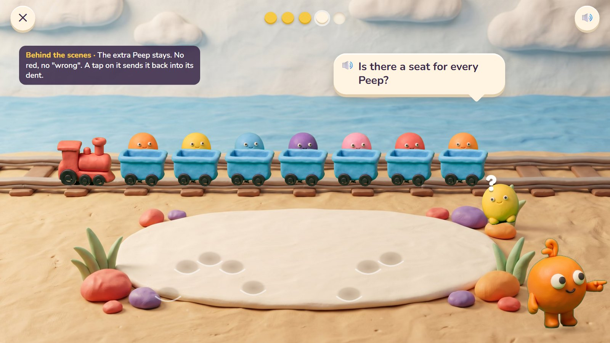
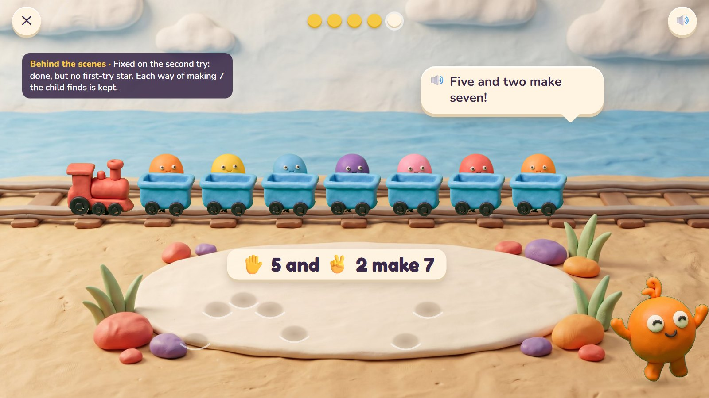
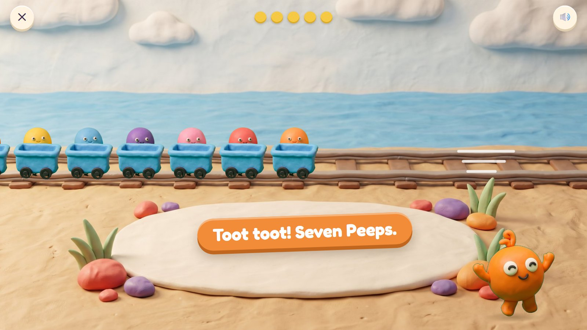

Poke Pals
Pom's tiny friends, the Peeps, sleep inside a soft patch of clay. Press a fingertip into the clay and a Peep pops out. The little train has one seat for every Peep that is coming along, so the child presses as many fingers as there are seats, all at once or one by one. Pressing several fingers together teaches the finger patterns children count with: a whole hand is five.
Pre-K · ages 3–5 host: Pom move: press with fingertips, several at once
The maths: Count out a number to 5, then 10; know small numbers at a glance; show a number on your fingers (5 and 2 more is 7). One activity is five rounds, about two minutes. With one finger: tap one fingertip at a time.
🎉 The fun
Every press leaves a real dent and a Peep pops out with a squeak; the train fills up and toots off.
🎥 The view
Fixed: the clay patch in front, the train on its track behind.
🎆 The finale
The train toots and rides along the beach with every Peep waving (3 seconds) while Pom counts them aloud.
Six moments

1The clay patch
The train has three wagons, one seat each. The clay patch is empty. A see-through hand presses one fingertip at the edge, once.
🔊 Press the clay! How many Peeps can ride the train?
The wagons show the number as seats, so a 3-year-old needs no numeral. The see-through hand shows the move, never the answer.

2Three at once
Three fingertips pressed together leave three dents, and three Peeps pop out, counted one, two, three as they appear.
🔊 One, two, three! Three Peeps.
At once or one by one, each fingertip makes its own dent and its own Peep. A palm or a flat hand makes nothing.

3A whole hand
Five wagons. The child presses a whole hand: five dents, five Peeps in five seats. A faint hand shape on the clay shows where fingers go.
🔊 A whole hand is five!
From age 4 the faint hand guide makes 5 "one hand" and 7 "a hand and two".

4A wrong try
Seven seats, but the child pressed five and three. Seven Peeps ride; the eighth stands on the sand looking for a seat.
🔊 Is there a seat for every Peep?
Nothing turns red and nothing says "wrong". The extra Peep stays until the child taps it back into its dent.

5Five and two
The extra Peep is back in its dent. Five fingers and two fingers: seven Peeps in seven seats.
🔊 Five and two make seven!
Fixed on the second try: done, but no first-try star. Any way of making 7 counts (4 and 3 too), and each new way is kept.

6All aboard
The train toots and rides off along the beach with every Peep waving.
🔊 Toot toot! Seven Peeps.
Mock-ups: Gemini's clay pictures (scenes, friends, props) with the maths drawn by code in the same clay look, the way the app would draw it, so every count and size is exact.
What is asked, for one age
- Three seats: press 3
- Five seats: a whole hand, 5
- A quick look: four Peeps peep out of the window for one second, then hide. Press that many
- Seven seats: two hands, 5 and 2 (or 4 and 3)
- Two Peeps already ride and there are five seats: press for the empty ones (3, so 2 and 3 make 5)
One activity card. The same activity serves other ages with other numbers:
| Age | What changes |
|---|---|
| 3 | Numbers 1 to 5. One finger at a time is fine. The seats show the number; no numerals. |
| 4 | To 10, with a faint hand shape on the clay so 5 becomes "one hand". Quick looks up to 4. |
| 5 | To 10. "Make 7 two different ways." Numerals appear on the wagons' tickets. Quick looks up to 5. |
Wrong answers we expect, and what happens
| Mistake | Looks like | What happens (never red, never "wrong") |
|---|---|---|
| Too many | presses one more than the seats | a Peep has no seat; the child taps it back into its dent |
| Too few | a seat stays empty | the empty wagon waits; Pom asks "Is every seat full?" |
| Counting one twice | "1, 2, 3, 4" over three Peeps | counting together, each Peep hops once as it is counted |
| A flat hand | the palm presses too | a palm leaves no dent: "Use your fingertips!" |
What it needs
- The beach scene with the clay patch and the track, drawn once
- The engine and one wagon, copied by code for every seat
- Twelve Peeps in six colours
- Dents and fingertip rings drawn by code
- Pom in three poses
- Voice: counting to 10, "a whole hand", four tips, praise
Test robot: Reads the number of seats from the question, presses that many fingertips at once (a pretend multi-finger touch) and checks every Peep landed in a seat. Once a session it presses one too many, to check the tip.
One question
← Back to Clay Bay · Poke Pals · Pull-a-Shape · Critter Maker · Seesaw Twins · Parade Squares · Fair Slices · Zoom Dig